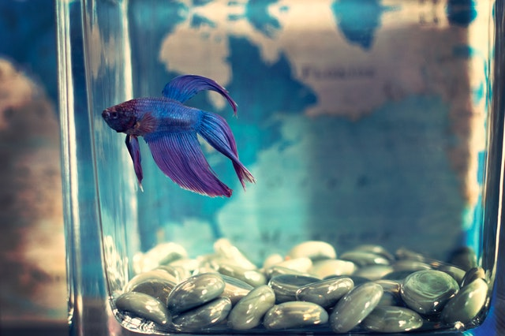

Fish
A fish may be the perfect “starter” pet for a child, but not just any fish will do. Goldfish may seem like the most obvious choice, but they’re actually more difficult to raise than the Siamese fighting fish (Betta fish). These Southeast Asian natives are adapted to survive in isolation, in surprisingly small amounts of stagnant water. You may not even need aerators, filters, heaters, or chemicals. However, betta fish thrive best in small aquariums with at least two gallons of water, regularly changed and kept between 76 and 82°F (24 and 28°C). Be sure to buy your fish from a store that has someone who can advise you on how best to care for them.
Cats

Notoriously independent cats need somewhat less care and attention than dogs, but no less commitment. Like dogs, cats require regular veterinary checkups and immunizations. It’s important to choose a cat that’s suitable to be around children. A cat may be a better choice than a dog if your family has limited living space.
Dogs
A cuddly puppy is probably the most classic children’s pet. Keep in mind that choosing the ideal dog involves more than falling for big brown eyes. Some dogs may be unsuitable for children. Before adopting a dog, ensure that the dog is well-socialized and comfortable around children. Any breed will need a significant commitment of time and effort. Puppies must be housebroken and require daily exercise, regular veterinary checkups and immunizations and plenty of love.
Rodents

Smaller mammals, including hamsters, guinea pigs, and gerbils, are relatively easy to raise. Also, most will thrive in a relatively small living space, and care is fairly straightforward. Except for hamsters, which are solitary, it’s best to obtain young same-sex pairs. Regular, gentle handling promotes friendliness. Be mindful, though, that bites are possible should rodents — especially hamsters — feel threatened. Surprisingly, rats make excellent pets due to their intelligence, larger size, and enjoyment of human companionship. Guinea pigs are also good kid-friendly pets.
Insects and arthropods

Six-legged creatures might not be the first to come to mind when thinking of pets for children. However, owning an ant farm can be an entertaining and educational experience for a child. Various suppliers sell habitats designed to let children directly observe ant activities. Ants can be shipped live or grown from eggs. Hermit crabs are another example of creepy crawlies that are easily raised in captivity.